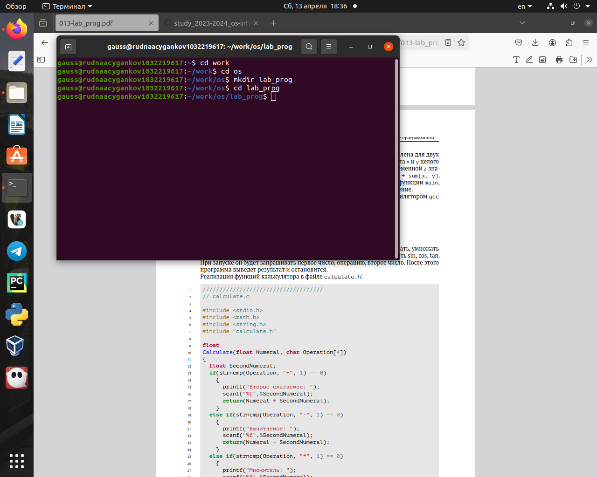

Навыки разработки и отладки программ необходимы любому человеку, связанному с IT и техническими науками.
Объект и предмет исследования
Командный процессор ОС UNIX
Цели и задачи
Приобрести простейшие навыки разработки, анализа, тестирования и отладки приложений в ОС типа UNIX/Linux на примере создания на языке программирования С калькулятора с простейшими функциями.
Выполнение заданий.
В домашнем каталоге создайте подкаталог ~/work/os/lab_prog. (рис. @fig:001)
Создание каталога
Создайте в нём файлы: calculate.h, calculate.c, main.c. Это будет примитивнейший калькулятор, способный складывать, вычитать, умножать и делить, возводить число в степень, брать квадратный корень, вычислять sin, cos, tan. При запуске он будет запрашивать первое число, операцию, второе число. После этого программа выведет результат и остановится. (рис. @fig:002, @fig:003, @fig:004).
calculate.ccalculate.hmain.c
Выполните компиляцию программы посредством gcc. (рис. @fig:005)
Попытка компиляции
При необходимости исправьте синтаксические ошибки (рис. @fig:006)
main.c убрал & перед Operation
Создайте Makefile (рис. @fig:007)
Компиляция
С помощью gdb выполните отладку программы calcul (перед использованием gdb исправьте Makefile) (рис. @fig:008, @fig:009, @fig:010)
Запуск программыРабота программыbreak, info, …
С помощью утилиты splint попробуйте проанализировать коды файлов calculate.c и main.c (рис. @fig:011, @fig:012)
splint calculate.csplint main.c
Результаты
Вывод:
В ходе выполнения лабораторной работы я приобрел простейшие навыки разработки и отладки приложений в ОС типа UNIX/Linux на примере создания на языке С калькулятора с простейшими функциями.